Hello! Welcome to my portfolio. I am a senior undergraduate student in the Department of Engineering Design at Indian Institute of Technology Madras. I have been an automobile enthusiast for as long as I remember. My undergraduate major sits in the sweet spot between product design and automobile engineering thus proliferating my love for automobiles, art, and engineering. I aspire to be an industry researcher in the domain of autonomous vehicles, clean energy powered transportation and would love to play a part in the upcoming age of widespread automation.
I have been very lucky to be surrounded by extraordinary faculty and peers and have had the opportunity to explore a lot of my interests including but not limited to Autonomous Vehicle Systems, Applications of Artificial Intelligence in Automobile Safety Systems and Reinforcement Learning. There was no dearth of opportunities to hone my EQ, creativity and people skills as a member of the Campus Recruitment, Extra Mural Lectures and Cultural Fest’s Graphic Design teams.
When I am not loaded with coursework and assignments, I keep myself occupied with a sketchpad, an acoustic guitar, and Netflix. My Myers-Briggs Type Indicator is ISFP (Introverted obServant Feeling Prospecting). I thoroughly enjoy a well-written non-fiction book and occasionally treat myself to a Wodehouse or Sidney Sheldon. I’m obsessively compulsive in making my work look good and strongly agree with the stranger who said: “Design won’t save the world but it damn sure makes it look good”.
Education & Achievements
Here is my educational history.
Indian Institute of Technology Madras
B.Tech & M.Tech, Engineering Design
Specialization : Automotive Engineering Merit cum Means Scholarship Awardee Minor Stream : Operations Research Activities : Institute Placement Team Coordinator, Strategist for Extra Mural Lectures, Saarang Design Coordinator NSO Basketball - IITM Chapter CGPA : 8.66/10
Maharishi Vidya Mandir Chennai
Class XII, Math, Sci & Comp. Sci
Central Board of Secondary Education Placed in top 1% in the Country IITJEE Mains - Rank 896 among 1,500,000 IITJEE Advanced - Rank 5973 among 150,000 Awarded INSPIRE Scholarship - 400,000 INR by the Government of India Academic Proficiency Award 2012-2014 Percentage : 96.6% | Score : 483/500
J.S.S International School Ootacamund
Class X, Math, Sci & Comp. Sci
Central Board of Secondary Education Awarded the Best Outgoing Student of JSSIS Guitar Grade 1 - Trinity College London Placed 1st in the district level art and collage competitons in The Niligiris Academic Proficiency Award 2008-2012 Overall GPA : 10/10
Professional Experience
Here is a list of my professional experiences.
Indian Institute of Technology Madras
Graduate Teaching Assistant
June 2018 - Present
Teaching Assistant for the graduate course 'ED5160 - Fundamentals of Automotive Systems' offered in the Department of Engineering Design by Prof. Shankar Ram. Responsible for evaluation of assignments.
Bosch Limited
Research & Development Intern
December 2017 - May 2018
Developed a hybrid electric powertrain simulation method and evaluated fuel consumption benefit for eight hybrid powertrain topologies for a cargo three wheeler vehicle. Developed various energy management strategies.
Indian Institute of Technology Madras
Undergraduate Research Intern
May 2018 - July 2018
Developed a path planning algorithm for autonomous ground vehicles with non holonomic constraints and obstacle avoidance capabilities traversing the optimal path while moving forward and backward.
Skills
Here are some things I'm good at.
Coding
C/C++ Python HTML/CSS, Latex Arduino, 8051
Computing
MATLAB Simulink Mathematica
Modelling
Autodesk Inventor Solidworks IPG CarMaker ABAQUS
Design
Adobe Photoshop Adobe Illustrator Adobe InDesign
Languages
English (Proficient) Tamil (Proficient) Hindi (Intermediate) German (Basic)
Coursework
Here is the list of courses I have done.
Artificial Intelligence
Reinforcement Learning, Machine Learning & its Applications
Automotive
Vehicle Dynamics, Automotive Engines & Systems, Structural Design of Vehicles, Control of Automotive Systems
Design
Functional and Conceptual Design, Computer Modelling of Machine Elements, Mechanics and Design of Mechanisms, Human Factors in Design, Detail Design, Design for X, Biomimetic Design
Systems & Control
Control Systems, Modern Control Theory, Adaptive and Optimal Control, Linear Dynamical Systems
Operations Research
Fundamentals of Operations Research, Advanced Operations Research, Computer Simulation
General Engineering
Engineering Mechanics, Macromolecules as Engineering Materials, Engineering Drawing, Basic Electrical Engineering, Thermodynamics, Fluid Mechanics and Heat Transfer, Analog and Digital Circuits, Geometric Modelling and CAD, Mechanics of Deformable Solids, Manufacturing Science, Deformation and Failure of Engineering Materials, Electrical Sciences, Finite Element Methods for Design, Introduction to Field and Service Robotics, Structural Dynamics and Vibration, Mechatronics System Design, Introduction to Computation & Visualisation
Mathematics
Calculus , Solutions to Ordinary Differential Equations, Linear Algebra, Partial Differential Equations and Numerical Methods
Labs
Physics Lab, Electronics Lab, Microprocessor and Microcontroller Lab, Product Design Lab I & II, Controls Lab, Automotive Systems Lab, Vehicle Dynamics Lab
General Education
Graphic Art I & II, Technology Invention and Innovation, Life Skills, Physics I & II, Life Sciences, Ecology and Environment, History of Art and Art Appreciation, Principles of Economics, Professional Ethics, German
Emergency Stair Mechanism for Electric Railway Coaches
Duration : 5 months | Guide : Prof. Sandipan Bandyopadhyay | Team : 5 members
Problem Statement
Redesigning the emergency stairs in EMU coaches of the Indian Railways to provide easy accessibility for passengers in case of an emergency stopping of the train in between established stations.
Motivation
Indian Railways being the largest railway network in the world has different types of coaches for different purposes all over India, ranging from passenger coaches to military coaches. Suburban railway transport is a major part of Indian Railways. Suburban railway transport is currently present in Chennai, Mumbai, Kolkata and Hyderabad [1]. This is one of the major commuting option for lakhs of people every day in these suburban regions. Electric Multiple Units abbreviated as EMU are electrically powered coaches which are used only for suburban services provided by Indian Railways. Provided the fact that a large number of people are using this system, it is the duty of Indian Railways to ensure a safe and comfortable journey to its passengers. However, Indian Railways has to consider a lot of constraints in its designs as it needs to cater to a diverse set of people. These restrictions affect the Railway’s intent to achieve a comfortable and safe design.
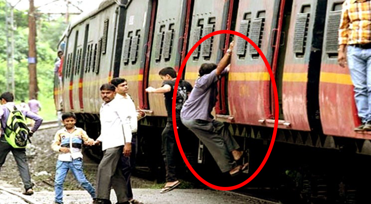
Taking the case of our problem statement, the EMU coaches, being wider than the normal coaches has a lower side profile which runs along the platform present in the stations. This space constraint affected the design of Emergency stairs in these coaches. Hence, the emergency stairs are placed in a difficult to reach position, and is difficult to use. Though platforms are present in all suburban stations, if the train needs to stop mid-way during an emergency, the present design of stairs will be a difficult to use for elderly people, kids and women. The stairs are placed in a position such that it is not visible when seen from inside the train. The passengers have to hold on to the handrail and then trace the position of the stairs by their legs without seeing the stairs which are placed deep inside from the door of the train. This procedure was tried by us to analyse the human factors involved and it was quite difficult to use the current design. The case will even be worse for elderly people who can’t balance properly and also for women and small children.
The passengers cannot even jump from the door as it is at a height of 1100mm from the ground level, which again is a difficult task for most people. Considering the fact that this stair was provided for use during an emergency purpose it must be, easily accessible, practically designed for all kinds of people to use and must be safe and shouldn’t affect the train’s moving dimension. But the existing design failing to do it, may affect some lives in case of an emergency. We came to know of this problem through our repeated interactions with the Mechanical Design Team in ICF (Integral Coach Factory). We felt that this is a problem which needs to be solved as it will have a great social impact if implemented. The ICF personnel also encouraged us to solve this problem statement and gave us the required resources to do it. So we decided to take up this as our problem statement and work on it. We were also inspired by the fact that a ready to fit solution from us would even lead to its implementation in the forthcoming Railway Department’s project, which could save lives in case of an emergency. The thought of developing a product which will notch up safety standards of Indian Railway, along with the support and guidance received from our faculties, teaching assistants, our department, workshop technicians and our co-PD lab teams encouraged us to take up this project, work on it and deliver the product we assured on our first week.
Specifications
The Emergency stairs are made keeping in mind, the average Indian railway commuters, who commute on a daily basis. The stairs by itself are cut out of mild steel L channels (which provide enough strength to hold at least two people), and the dimensions set along with the train dimensions well. At each of the joints where the two step parts meet, we’ve used a bush bearing for support, while still allowing a pin joint movement. The stairs on both side take support from two parallel running cylindrical bars (one of which is fixed to the train). The other end, as according to our drawing and method is free to move along the coupler curve.
The weight of the stairs comes off as an important factor, as it engages itself and reduces the amount of weight it can carry extra. The model we made weighed around 20 kg. The most important part of the whole product is the generation of the straight line for the stairs to move horizontally while maintaining the quality and weight of it can carry for a significant distance. This is the first of its kind. We used a four bar mechanism to generate a coupler curve which is close enough to a straight line and carry an average person's weight. We also used a special type of bearing for the four bar linkages which would help them bear axial as well as radial loads. More on these bearings will be described in the solutions part. A brief description of the dimensions:
The linkages measure: 56x4x4 cm, which we found optimum for weight vs. the cost effectiveness. Also these dimensions are similar to what the existing coaches have already.
The height of the lowest stair from the ground up is approximately 70 cm.
The distance between each of these stairs is 20 cm.
When fully retracted, it comes to approximately 112 cm in length.
The challenges involved in this design are that the available space for implementing the solution is very low because of the low clearance distance available between the moving dimensions of the coach and the platform. The mechanism will be operated in an oily and dusty environment and therefore, it needs to be designed considering this factor so as to reduce maintenance costs and failures during operation. The stairs must be able to hold 3-4 people at a time and must be able to withstand a load of around 2000N.
Design Process
The emergency stair is actuated using a four bar mechanism. This is preferred compared to a direct prismatic joint to reduce the maintenance cost and also considering the environment of its application. The four bar is designed such that the coupler curve generated traces a straight line to avoid rubbing of surfaces and to reduce friction. The mechanism can be actuated mechanically as well as electrically using a DC motor. The mechanism needs to support heavy loads and a proper design of bearing is very essential for bearing this high radial and axial loads. Tapered roller bearings are used for this purpose as they can take large amount of axial and radial loads without affecting its operation. But this type of bearings are costly and hence normal roller bearings were used with additional support housing. The four bar was designed to slide on a flat plate during its actuation to reduce the entire load acting on the stairs.
Design of the Four Bar Mechanism
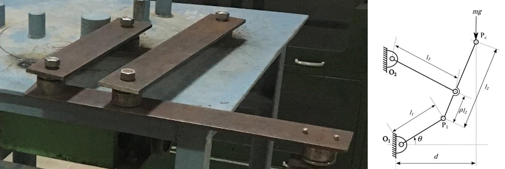
A prismatic joint actuated using a piston can do the same job, but the problem being that prismatic joint creates a lot of friction and is also difficult to maintain. This is the main reason for replacing the existing prismatic joint with a four bar mechanism. The four bar mechanism is designed keeping in mind that the coupler curve generated should be a straight line. This was achieved using the concept of Chebyshev spacing and three point position synthesis. The coupler curve generated using this method is very close to a straight line for all practical purposes.
Design of the Bearing
As mentioned already a tapered roller bearing is best suited for this mechanism, the cost being the only drawback in using them. This calls for a new design of bearing which is cheap and also at the same time has better load carrying capacity. The bearing should also withstand axial load and prevent axial movements. In order to fulfil all this requirements an entire bearing assembly consisting of three individual parts is designed.
Design of the Stairs
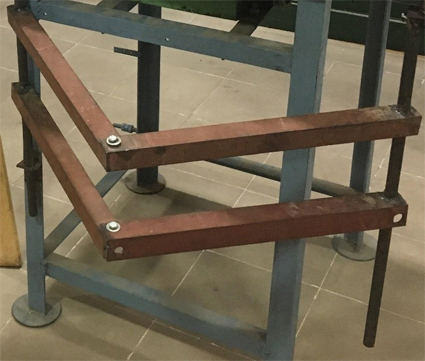
A retractable model for the stairs is designed. The main positive effect is that it occupies very less space when not in use. Whenever there is a necessity the entire structure opens up.
Design of Bearing Housing
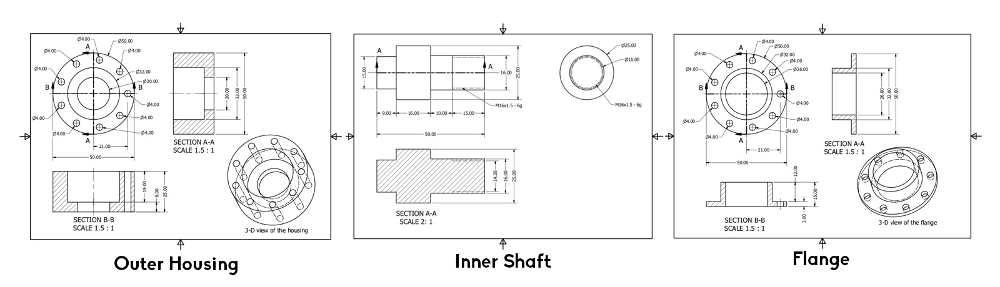
The outer housing is the backbone of the bearing assembly, giving the joint structural support along the radial and axial directions. The roller bearing is press fitted into a step shaft. This shaft is inserted into the bearing outer housing. The shaft is free to rotate about its own axis. This shaft is threaded on its top, where the four bar link will be attached by threading them together. The flange prevents the movement of the shaft in axial direction and also helps in locking the Inner shaft within the housing. They are loose fitted with the cylindrical outer housing with the inner shaft present in between them.
CAD Model
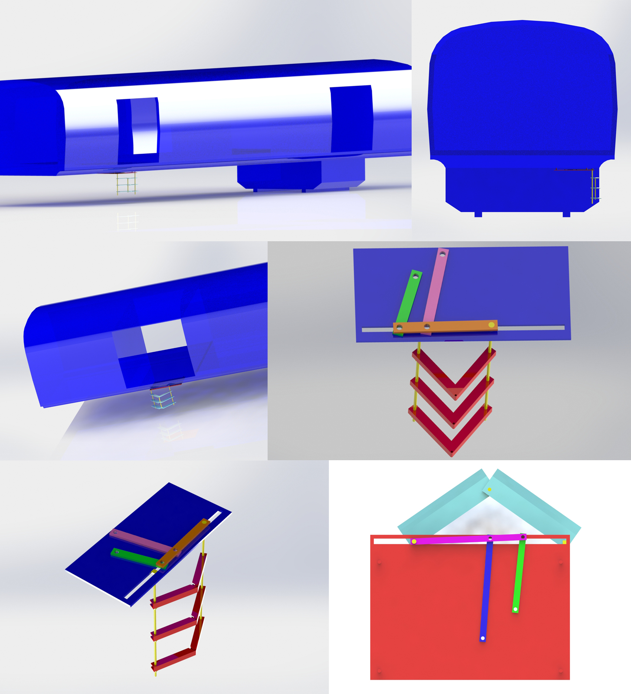
Stress & Strain Analysis
The simulations were done in SolidWorks by applying fixture constraints, appropriate material and then specifying the load points on the structure. The load is applied uniformly on the surface of the stairs like a pressure load.
Load on each stair applied: 2000N
A finite element method is followed by SolidWorks to create a mesh of the given part and compute forces and stresses in each part of the mesh. The plot is given as a result such that the maximum value of the given quantity is denoted by red colour and the minimum value is denoted by blue colour. The colour gradient shows the variation of forces and stresses along the structure.
Final Prototype
References
‘Design of a static balancing mechanism for coordinated motion of an external load’ – Aravind Baskar, G Saravana Kumar, Sandipan Bandyopadhyay, 2nd International and 17th National Conference on Machines and Mechanisms
Bearing Housing drawings provided by Dr. Sandipan Bandyopadhyay, Department of Engineering Design, IIT Madras
Microfluidic Touch Sensors Based on Mimosa Pudica
Duration : 5 months | Guide : Prof. Savio Sebastian | Team : Individual
Synopsis
A mechanical touch sensor system with microfluidic channels inspired from the mimosa pudica. The mimosa pudica plant, popularly known by the colloquial term ‘the touch me not’ plant belongs to the species of plants that undergo structural changes in a very short span of time. This phenomenon is called rapid plant movement. The technical term for these kind of movements is ‘seismonastic movements’. This movement is triggered when certain receptors are activated by small changes in the plant shape.
The water in the cells and around the cells apply a force on the cell walls called the ‘turgor pressure’. The structure of the plant and the leaves are kept in position due to this pressure. The structure is maintained as long as there are no external disturbances. When disturbed externally, ions of potassium, calcium and chlorine etc. were released in the plant to trigger the turgor loss in the base of the leaf stalk region also known as the pulvinus. The ions generated makes the water diffuse out of the cell resulting in turgor loss and hence the seismonastic movement of the leaflets.
Inspired from this amazing biological phenomenon, I have thought of a novel touch sensor mechanism which derives its inspiration from the seismonastic movements of the mimosa pudica. Conventional touch sensor systems are resistive or capacitive in nature. Infrared sensors are also used for sensing touch. The mechanism that I propose is that of a touch sensor which will have microfluidic channels all across the region where touch is to be sensed. Whenever a specific area of that region is touched, the pressure changes in that particular section of the microfluidic channels will be amplified elsewhere and the position and the pressure of touch can be calculated by calibrating the pressure sensors accordingly. The position at which the user touches the sensor area can be sensed by aligning the fluid channels in vertical and horizontal directions. The vertical channels will detect the position in the vertical direction by sensing the pressure difference in either ends and marking the distance from a reference point. The same procedure is followed for the horizontal channels too. With the horizontal and vertical distances from a reference, any position can be detected in terms of a coordinate system.
Literature Review
Introduction
The non-directional movement of plant leaves in response to external stimuli are called nastic movements. Nastic movements are of various types depending on the stimuli triggering it. Photonasty is the movement triggered by light, helionasty is the movement that is intended to cut down the radiation absorption, epinasty is the bending of the plant part due to its weight, nyctinasty is the movement of the leaf due to darkness, hydronasty is the movement in response to water, thermonasty is the movement in response to temperature and seismonasty is the response to contact. Seismonasty is the most commonly discussed and widely popular phenomenon observed in the plant mimosa pudica.
Method & Mechanism
Seismonasty is seen in mimosa pudica by the virtue of its high speed bending of its leaf pulvinus. It is also observed in insectivorous plants where the sensory hairs is coupled to an electrical signalling system where the plant traps the insects whenever it senses a change in curvature of its hairs. Seismonastic movements are mostly governed by a sudden significant loss of water from turgid motor cells causing the tissue to collapse promptly inducing a very quick movement.
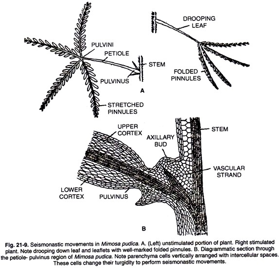
The movement in the main pulvinus at the base of the petiole is of two stages. The rapid sinking which lasts for a few seconds and the recovery which takes about an hour. These seismonastic movements are a result of turgor decrease in the pulvinus. The sudden touch or shock is seen to induce a generation of calcium and potassium ions which decrease the turgor at the pulvinus as found out by Allen (1969). Tannin from the tannin vacuole was found to be expelled to the cytoplasm. This redistribution of potassium and calcium ions in the motor cells following a stimuli is said to be because of the aggregation of motor cell fibrils. This generation of potassium and calcium ions produce contractile proteins which are transmitted to the pulvinus base to contract the pulvinus base for the rapid seismonastic movement.
In the above shown graphs, the first graph indicates the bioelectric variations recorded in the petiole when different types of stimuli are given to the leaflets. First, a mechanical stimuli is given and the effects were studies individually. The mechanical stimuli resulted in a spike which lasted only for a few milliseconds and the shrinkage has already been in effect. However when a heat stimulus was applied, the effect was found to be much slower (around 3s) as shown in the lower region of the graph. The second graph shows the activity of radioactive potassium ions in the pulvinus region over time. It is seen that there is maximum activity when the stimulus has just been applied and the ions are released to activate the contractile proteins. The above mentioned results were the work of various people over the years in the exciting field of seismonastics in mimosa pudica.
Problem Statement
To develop a touch sensor which uses the principle of microfluidics and locates the position of touch from a reference local coordinate system and relays the information to the system using the sensor. The use of microfluidic channels is inspired from the mimosa pudica plant. The goal is to achieve a design for a touch sensor which uses this principle to get comparatively good results as the existing touch mechanisms. The mechanism of seismonastic movements is studied in the mimosa pudica plant and the proposed design inspires the relevant and viable mechanisms to come up with a design which would be the closest we can get to replicate what nature does inherently.
Solution Methodology
Proposed Solution 1
The sensor, underneath the surface of the user interfacing pad, will have a microfluidic array which is arranged in a serpentine like shape which is again mounted on another pad and the distance between the user interface pad and the base pad is very small and just enough to house the microfluidic channels. The user interface pad is compliant in nature so as to transmit the touch force on to the microfluidic channels.
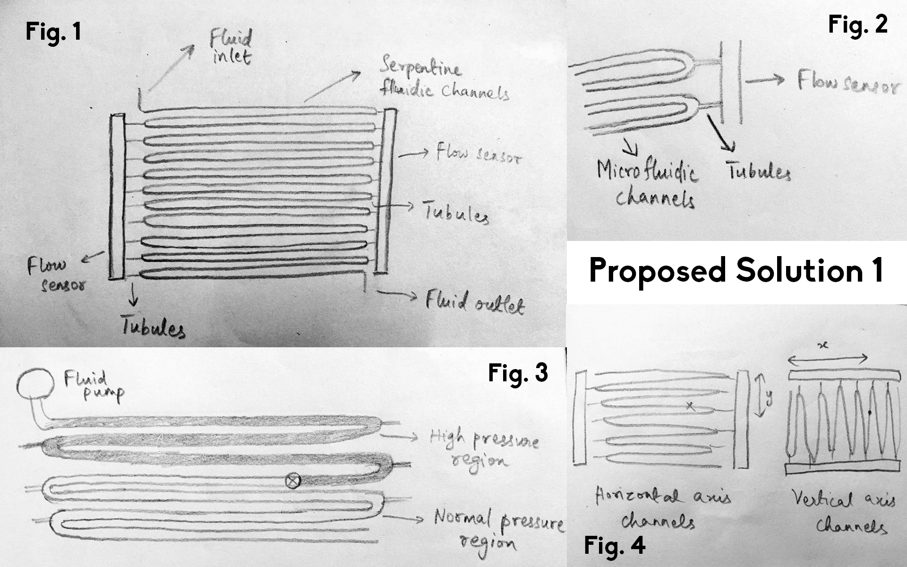
In Fig 1, the zigzag wire like part is the microfluidic array which has one inlet and one outlet which are both connected to either ends of a fluid pump which maintains a constant flow rate between the two ends. At each curve there is a tubule which has a much smaller cross section compared to the serpentine channel. The tubules are on both sides of the serpentine channel and they are connected to a pressure sensor. The flow sensors measure the pressure of the fluid flowing into it. There is an array of pressure sensors which records the pressure of the fluid at each level. This will help us determine the relative position of the touch in one axis.
Whenever a person touches at a spot, the flow gets obstructed at that point and then the pressure everywhere across the channels above that spot builds up and the sensors sense a higher pressure in the array above the touching spot and a drop in pressure below that point. This pressure sensor data is fed to a control unit where it records the height from the base above which there is a higher pressure and hence the y-coordinate of the touch in that pad relative to an origin. The explanation of the mechanism is illustrated in Fig 3. Now that we have mapped the position on the vertical axis relative to an origin, it is required to find the position along the horizontal axis for which another array of channels, tubules and sensors like illustrated in Fig 1 is positioned perpendicularly to the existing channels. These two array of channels are then positioned between the base pad and the user interface pad very close together such that the flow in the channels is obstructed when the user interface pad deforms slightly inward.
The data from the pressure sensor array of the vertical axis channel is sent to the control unit and the high pressure region is distinguished from the low pressure region and the position along the horizontal axis with reference to the origin is mapped. Now that we have both the coordinates of the touch, we have successfully mapped the touchpad area with the change in pressures across the microfluidic channels. Whenever the user touches anywhere on the touch pad, the coordinates of touch in the x-axis and the y-axis with respect to a predetermined origin is found out.
Proposed Solution 2
Another proposed solution uses the principle of refraction in finding out the position of touch. For this, a serpentine fluidic channel or a thin layer of fluid can be used. The construction of the mechanism is as follows. There is an array of photoreceptors attached to the base plate and the microfluidic channel of the fluid layer is kept on top of the photoreceptors with a small gap by mounting it on a platform above the base plate at micrometre order distance. Above the fluid, there is an array of LEDs and above that there is the user interface touch pad.
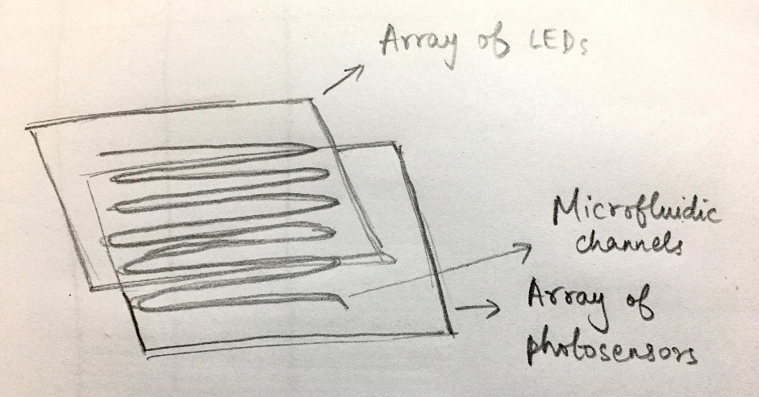
The principle of working of this model is that when density of a medium changes, the refractive index changes. The array of LED shines the light on the fluid layer and the light is refracted and received by the photoreceptors which record the intensity of light at each point on the pad. When the user touches the pad, the cross section of the fluid layer is reduced at that point and density in that region changes. When the array of light is shone on the fluid layer, there is a different pattern of intensities recorded by the photoreceptors. The intensity map is sent to a control unit which processes the map and finds the position of the touch with respect to a reference origin.
Further Improvements
The touch sensor can be extended to detect touches of various pressures and use that information to perform different functions based on the pressure of touch.
The touch sensor can be extended to record movement of the user’s finger along the touchpad to record various gestures.
The sensor can be extended to detect multiple touches at the same time using the same mechanism.
It can be extended to record touches within a time span to indicate a special function. For example, double tap on a computer track pad.
The same principle can be used to model a force sensor or a pressure sensor to detect fluid pressure changes and density changes and calculate the force or pressure applied.
The sensor can be extended to output the area of the touch pad which the user is touching.
References
G. Roblin, Mimosa Pudica: A model for the study of the excitability in plants, Biological Review (1979)
H. Toriyama, M. J. Jaffe, Migration of Calcium and its role in the regulation of Seismonasty in the motor cell of Mimosa Pudica. Plant Physiology (1972)
Ruth L. Sutter, Arthur W. Galston. Mechanisms of control of leaf movements, Annual Review, Plant Physiology (1981)
Neil Campbell, William W. Thompson, Effect of Lanthanum and Ethylenediaminetetraacetate on leaf movements of Mimosa, Plant Physiology (1977)
G. Roblin, Experimental analysis of seismonastic movement in the sensitive plant, Nature (1976)
Robert D. Allen, Mechanism of Seismonastic Reaction in Mimosa Pudica, Plant Physiology (1969)
Vehicle Parameter Optimization for Vehicle Dynamic Performance
Duration : 5 months | Guide : Prof. R Krishna Kumar | Team : 3 members
Introduction
The problem statement for the project involves the following question. Given a car has n design parameters to be tuned, what is the optimal way to choose values for these parameters, so that it performs well in the standard vehicle dynamic tests that it will be put through at a later stage? Simulation of cars of different setups and different environments/tests using IPG CarMaker is used for collecting the necessary data. The solution involves multiple difficulties due to trade-offs between factors. While Rear Wheel Drive helps increase longitudinal performance (e.g. straight line acceleration), it might also make the car oversteered. While low aspect-ratio tyres make the car excellent in handling response, they may affect ride comfort. Data from experiments done by changing one-factor-at-a-time (OFAT) can’t be used to independently analyse the effect of each factor, since OFAT doesn’t capture inter-dependence and joint-effect of the factors.
Note that the word ‘factors’ has been used throughout this report to refer to the design parameters in the car, that have to be tuned. ‘Factor level’ refers to the value of the factor. To partially overcome these difficulties, the solution approach used in this project is that of Taguchi’s Design of Experiments (DoE). This well-known method has been in use predominantly in the manufacturing industry, and has been chosen for the current project because of its attractive properties: minimum number of experiments and independent analysis of each factor. The DoE procedure may be classified roughly into three phases :
Selection of Orthogonal Array (OA) (which decides the number of experiments to be done and the number of factors), selection of factors to be studied, the factor levels for each factor using appropriate units, and selecting the response to be studied from the experiment.
Running the experiments, which correspond to rows in the OA, and saving the data. In our case, each experiment is a simulation in IPG CarMaker.
Using standard DoE analysis techniques, studying the change in response when the factor level is changed. This is done separately for each factor, and is possible because of the design of the OA, which helps decouple the effects. This is followed by an interpretation of the results, and eventually the selection of factor levels for optimal response.
It has to be noted that while the second phase mentioned above simply involves repeated simulations in CarMaker with various test setups (no knowledge of the underlying process required whatsoever), the first and third phases involve engineering intuition and Vehicle Dynamics knowledge. An example in phase 1 is the selection of factors and responses to be studied. A wrong selection of factors results in wasted experiments. Also important is a meaningful selection of factor levels: extreme, impractical values for the levels would result in wrong conclusions at the third phase. An in-detail explanation of the performed DoE follows.
Methodology
Selection of OA, factor levels
After observing trends in responses to 4 factors using a small (L-9 OA) DoE initially, a bigger OA was chosen to observe the effects with more factors and with greater resolution. The chosen OA is an L-32 array, which implies 32 experiments are to be conducted. A maximum of ten factors can be analysed independently using this array. The first factor can be analysed only at two levels, and each of all the other 9 factors can take four levels. The factors and their levels are summarised in the table below. This is followed by the L-32 Orthogonal Array itself. An explanation for the choice of levels is explained in the next section.
Three observations about the OA selection are in order. First, note that while complete car design would involve hundreds of parameters, we have tried to tune only the 10 parameters that are possibly most important for vehicle dynamics, because of practical constraints. Second, once the 10 factors are decided, we see that most of them, like mass, CG position etc. for e.g., can take continuous values anywhere within their practical limits, but we have chosen only 4 equally spaced values (factor levels) to capture the entire range, including the limits. The third and most important observation in the following. Even with these two simplifications, one can have a car by choosing one level for each of the ten factors, and 21 * 49 such choices are possible, which leaves us with 524288 cars - i.e. around half a million cars to be simulated for getting complete data. This is where Taguchi’s DoE helps: The Orthogonal Array is the arrangement that helped pick just 32 important cars from this set for simulation, and still retain most of the important results. Selection of factor levels was done by benchmarking the values with all kinds of cars in the market. Though the benchmarking data is not completely shown here, three examples will serve the purpose:
For mass, the lowest limit, i.e., level 1 value was chosen from some of the lighter cars from the market. For example a TATA Nano weighs 705 kgs, and an Alto 800STD weighs around 693 kgs. Hence the lower limit was set at 700 kgs. For the upper limit, the mass of some classic sports car models, which are well-known for performance, were analysed: the Porsche 911 weighs 1380 kgs and the Nissan GTR, known for its heaviness, was at 1740 kgs, which resulted in the upper limit considered for mass in the DoE being 1600 kgs. Note that cars outside this range do exist, like the Dodge Challenger Hellcat for e.g., but those exceptions were omitted since the optimal car is not being designed with that category (raw street/drag strip performance) in mind. This limits were verified by looking at more regular cars like Baleno(890 kg) and Honda Jazz(1007 kgs) and ensuring that they fall within this range.
Track width of almost all the said classic cars were close to 1.5m, and the lowest and highest track widths of cars in the market under this category (performance) were 1.3m and 1.6m, hence this narrow range was chosen as it is for the DoE.
Similar reasoning applies for wheelbase. As before, for obvious reasons, limousines etc., which have a very high wheelbase, were not included in the benchmarking data since they will reduce the quality (the range of wheelbase values considered will increase, reducing resolution).
Simulations
The 32 rows of the OA correspond to 32 setup/combinations of the factor levels. This implies 32 cars would be created. The 32 cars were hence developed using the ‘CarGenerator’ feature of CarMaker, from scratch instead of being based on some existing car. This serves the purpose of ensuring unbiased comparison in phase 3 of DoE: in other words, all other parameters of the car – including engine, chassis etc. were of the same specifications for all 32 cars. The 32 differ only in the 10 tuneable factors. No body structures were given for visualisation, only the bare minimum, necessary data were used resulting in a skeletal structure for the chassis. Now the main problem is in running the tests: All the 32 cars had to be put through all 7 tests considered: (Lane Change, Sinusoidal Steer, Slalom 36m, Steady Circle Driving, Pulse Steer, Step Steer, Rollover Cornering). Resulting in a total of 32*7 which is about 220 simulations to be performed. Instead of doing this manually, the ‘TestManager’ feature of CarMaker was put to full use. Once the list of tests to be run is specified, this runs all the tests in order, saving all 224 result files as .erg in the project folder.
As a pre-processing stage for analysis, all these .erg files had to be converted to .mat form, for analysis in Matlab. This was done using file management functions in MATLAB, followed by more processing to save the analysis results (effects of different factors on different outputs, found using standard DoE techniques) in a variable. Plots summarise the results, making it simple for the next stage, i.e. interpretation, from which optimal/near-optimal cars may be designed. All this resulted in a single .m file of code, which can directly process the output directory of CarMaker, read and convert .erg result files to .mat, perform analysis on the .mat data, save results and plot results. To make this more useful for any user and to make it easy to use when any parameter (including the OA itself) is changed, the code was made general enough. The lines of code are enclosed at the end of this document.
Inferences & Conclusion
The plots generated by the said general purpose code help one design a car, i.e. choose factor levels based on the objective. A few of the plots are shown here and interpretation given. All plots may be obtained by running the code.
Studying the effect of each factor on the response metric : Max roll in a Sinusoidal Steer test manoeuvre
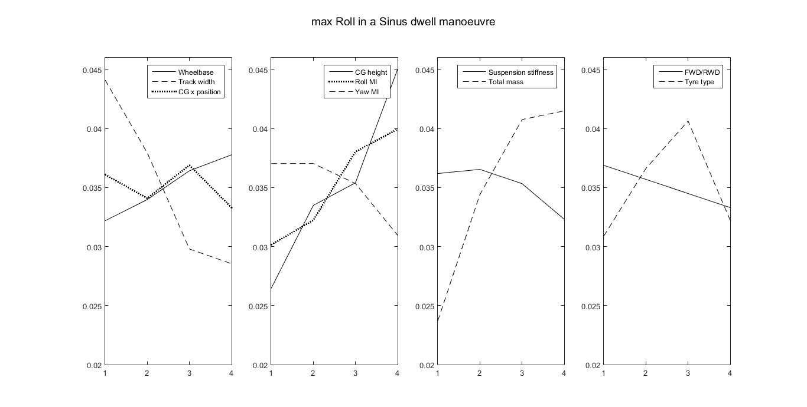
It is clear that maximum roll during the ‘Sinus Dwell’ manoeuvre is a response that has to be minimised. Hence the corresponding plot has been shown in the next page. The effect of the 10 factors is shown in groups of three, in four plots (with same axis limits) for clarity. The x axis of each plot shows the levels of the factors (note : in the last plot, the factor FWD/RWD is shown with levels 1 to 4, with 1 corresponding to Front Wheel Drive and 4 to Rear wheel drive). The following observations may be made: From the graph, it is clear that track width and CG Height affect roll the most. This is in agreement with reality, since a higher track width would give a higher roll stiffness, which is given by :
K_roll = (1/2)*K_susp*(trackwidth)^2
It is also well known that (trackwidth) / (2 * CG_height) is an important ratio is roll dynamics. When CGheight is low or trackwidth is high, the vehicle would be more stable in roll. This fact is clearly reflected by the graphs. Also, RollMI shows a counter-intuitive effect, which could be possible because of the fact that RollMI is relatively insignificant once wheel lifts off. Analysing all factors in a similar manner, the optimal factor levels for minimising the maximum roll in a sinus test will result in the following car.
Studying the effect of each factor on the response metric : Max roll in a Steady Circle 42m test manoeuvre
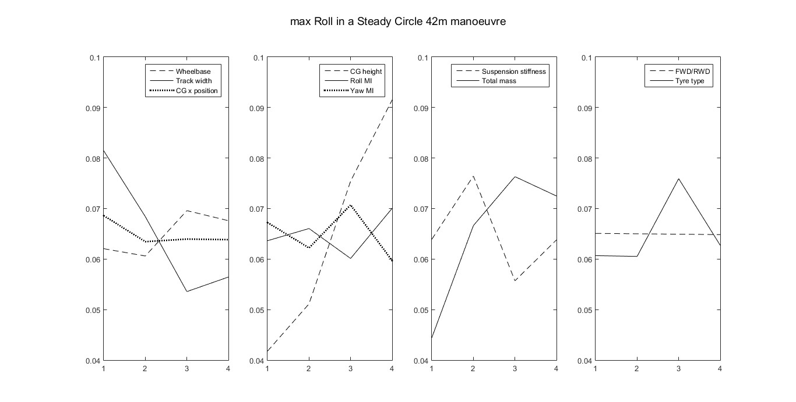
In this test, there are no transients involved and hence the same effects as the previous case are more clearly visible. YawRate measurements for this test will be meaningless (since all cars must have the same, steady state yawrate value in this circle), hence Roll is a good response metric to choose as performance index for optimisation.
Max roll seems to be relatively invariant to changes in CG x position, wheelbase, Roll MI, Yaw MI and whether the car is RWD/FWD. In a goal programming setup, these factors can hence be used for optimising some other output metric, in addition to roll.
Studying the effect of each factor on the response metric : Mean YawRate in Lane Change Manoeuvre
In this test, a lot of transients are involved, and Yaw Rate is an important parameter in this test. This is different from the steady circle manoeuvre, where YawRate was a bad metric to choose for optimisation.
Note that YawRate need not be minimised or maximised but has to be close to some target value, 0 in our case.One clear observation is that when CG x position is shifted further backward, mean YawRate increases : this is understandable because the resulting Oversteering characteristics may result in drifting and related effects.
Ergonomic LUMBAR SUPPORT FOR DRIVERS
Duration : 5 months | Guide : Prof. Venkatesh Balasubramanian | Team : 3 members
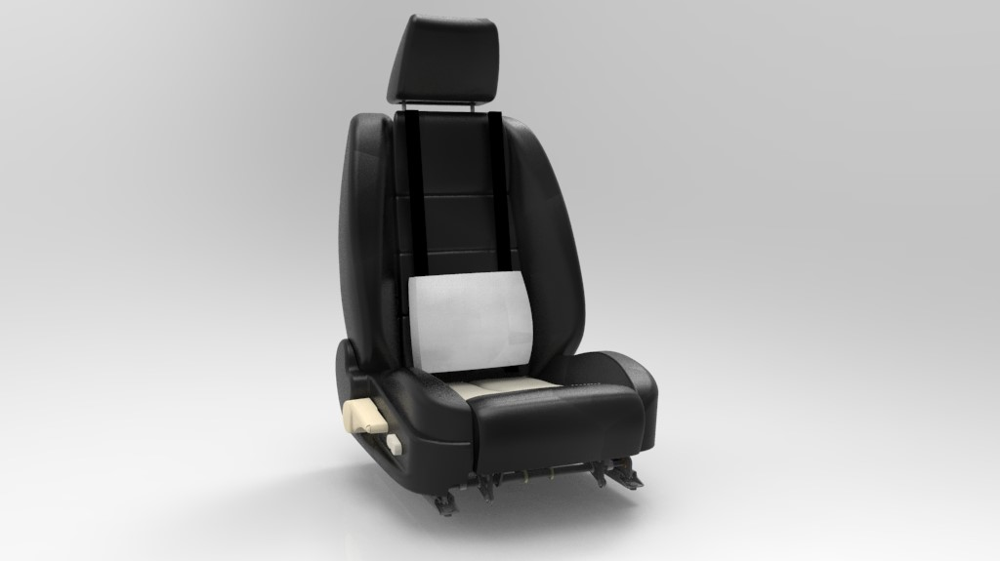
Abstract
The project outlines the problems faced by drivers due to an inadequate lumbar support in their car seats. A novel design for a lumbar support is suggested.
Motivation
Lower back pain is one of the most prominent cause of physical disabilities. It can be categorised into two types namely acute and chronic. Acute lower back pains are usually temporary and lead to only physical pain and trauma in the short period. Whereas chronic back pains have a strong psychological effect in addition to the physical unease like work dissatisfaction, boredom, laziness etc.
According to various studies and surveys, 60% - 80% of the general population has or has ever faced lower back pain at some point on their lives. In a study, Kelsey JL and Hardy J determined how driving motor vehicles is a risk factor for acute herniated lumbar invertebral disc. In a survey conducted by Walsk K and Vames N, they reported that the lifetime incidence of lower back pain was 63% amongst the surveyed. For men, the strongest associations were with heavy lifting and prolonged car driving. Thus lumbar support pillows have been conventionally used to correct lumbar posture and comfort during prolonged driving. This helps curb lumbar flattening and to increase thoracolumbar curvature in the spine and reduces the occurrence of short term and long term lower back pain.
Many of the conventional lumbar support systems for automobile seats available are either very elementary or complex electronically and pneumatically adjustable systems. We aim to solve the problem of providing adequate lumbar support by designing a cheap and effective retrofittable lumbar support mechanism that caters to the need of a wide range of people. While making it simple to use and manufacture, we also want to meticulously design it to accommodate all the vital biomechanical factors into consideration.
Problem Statement
To redesign a retrofittable and height adjustable lumbar support system for automobile seats, which reduces lower back pain and also corrects the posture of the occupant of the seat. The rationale followed to design a lumbar support system is that it is solely mechanical and does not involve any electrical components, and also it should be adjustable to suit the need of majority of the occupants of various heights and weights. It should be retrofittable to a wide range of car seats which usually differ with each model.
Hypothesis
Our conjecture is that the spinal posture for drivers in the standard car seats is sub-optimal at best and this is what causes lumbar disorders in drivers who drive very frequently or for long durations or both. This can be improved by using lumbar support cushions as an add-on in their existing car seats.
Objective
To redesign a retrofittable and height and stiffness adjustable lumbar support system for automobile seats, which reduces lower back pain and also corrects the posture of the occupant of the seat. The lumbar support system should be detachable and re-attachable according to the user’s needs. The mechanism used for the height adjusting purpose should not interfere with the comfort of the occupant. Since automobiles come in different manufacturers, they tend to have very different seat profiles and sizes according to the segment of the vehicle and also the make and model. The lumbar support system thus designed should be more or less universally compatible with models from various brands.
Concepts
The core concept is to make a height adjustment mechanism that allows the user to position the stiffness of the lumbar support according to his needs and comfort without compromising on the aesthetics and overall comfort of the lumbar support. This is achieved by breaking down the support into two parts, namely the outer cushion, which has a curved convex profile and provides basic comfort to the user, and an inner stiff cushion that adds the crucial rigid support (core) to the product which will correct the spinal profile of the user. The core can move independent of the outer cushion along the vertical axis to allow for adjustment for people of various heights.
Some concepts were generated for the height adjusting mechanism. The concepts were studied and evaluated on the basis of its effectiveness, its ease of use, universal compatibility, cost and its interference with the occupant’s comfort.
Concept 1
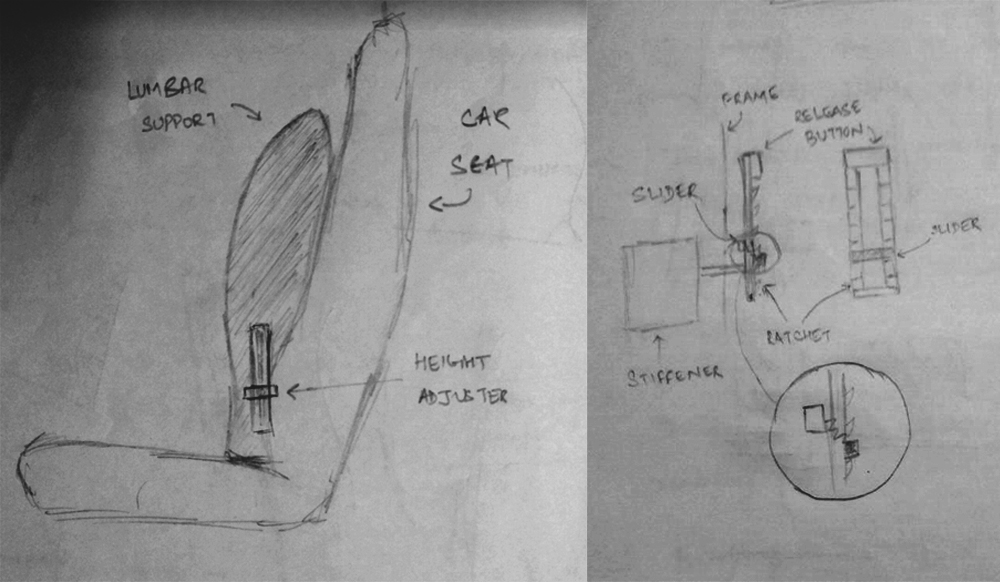
The mechanism consists of a pair of ratchets that are fixed, the slider handle can freely slide on the ratchet vertically upwards but the downward motion is restricted by the ratchets. The slider is kept pressed against the ratchet frame by a spring that is fixed to a slider on the other side of the ratchet. This allows the user to move the slider downwards by pulling on the slider, which will release it from the ratchet, and then pushing it down. When the slider is released, the spring pulls it back against the ratchet, thus locking it in place again.
Concept 2
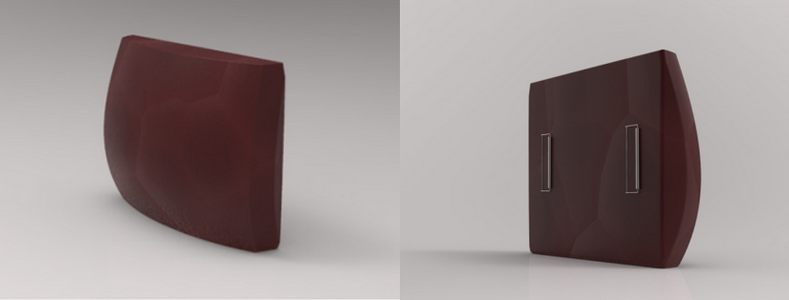
This mechanism consists of a pair of belts that go around the seat vertically through the gap between the horizontal and vertical part of the seat and it is buckled tightly behind the seat. A pair of clamps that are loaded with torsional springs is attached to the horizontal ends of the seat cushion facing the same direction. The clamps attached to the cushion can be fitted on the belt at the height desired and can be removed when not necessary. The curvature of the cushion along with the rigidity provided by the core will provide the appropriate lordosis of the spinal and cervical regions needed to make the driver/passenger comfortable even in long rides. The cushion will also adapt to the specific lumbar profile of the user over time as it is made of memory foam, which will increase the comfort that it provides. The use of a core of appropriate stiffness will also assist in correcting the posture of the user.
Evaluating the concepts based on the above mentioned criteria, Concept 2 seemed like the better solution to the problem because the complex ratchet and pawl mechanism in Concept 1 is bulky and the presence of rigid components behind the cushion adds to the discomfort of the seat occupant and it proves to be counterproductive.
Proof of Concept
The optimal spinal model for the driver is the average Harrison model, with the seat back angle inclined at 10 degrees in the sagittal plane in the backward direction. From the same study, it was found that the optimum driver seat should have the following attributes:
The lumbar support should be able to accommodate vertical and horizontal translation.
The inclination of the seat should be kept around 100 degrees angle with the vertical to reduce cervical acceleration-deceleration injuries.
The lumbar support should be approximately in the shape of an ellipse and should be positioned at approximately 5 centimetres at the top of the posterioinferior spine area of the pelvis; this will result in the sitting lumbar curve of the driver to be nearly identical to the standing spinal model which is validated by various studies.
The correct seating posture is that which imitates the curve of the spine when the person is standing. The cushion was designed such that the rest position of the cushion imitates the spinal curve of a standing person. Thus when the seat occupant leans against the cushion, it will accommodate to the ideal spine curve and thus correct the occupant’s posture. The height adjustment mechanism is a belt and clamp mechanism. The mechanism is compliant and it allows for horizontal and vertical translations. A rigid mechanism will prove to be counterproductive because automobiles tend to vibrate and go through roll and yaw motions. The belt being flexible will accommodate to posture even under these conditions.
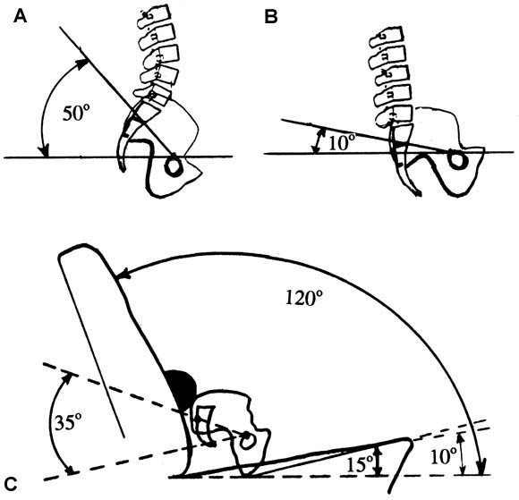
Changes in the angle of pelvic tilt when standing (50°), when rotated 40° posterior in middle sitting, and in driver's seat with 120° seat backrest incline. A, The standing average angle of pelvic tilt, measured as incline of postero-inferior S1 to a horizontal at the top of the femur head, is 50°. B, The pelvis rotates 40° posteriorly on the x-axis (extension) in the middle sitting position, whereas the lumbar lordosis is flattened. C, The lumbar support increases pelvic rotation and lumbar lordosis. The ideal pelvic rotated position is 35° on a firm seat with lumbar support, with 10 seat bottom incline, 5° depression into the seat bottom, and 120° seat backrest incline.
Future Work
Make a working prototype and test its efficacy.
Plot the pressure contours of people of different heights and validate the working of the height adjusting mechanism and the effectiveness of the cushion.
The design shall also need to be tested for versatility and modularity in various car seats of different sizes and shapes.
Getting user review and reviewing posture changes after long term usage.
Integrating the stiffness variation is also a major goal and needs to be achieved before the final design iteration.
Conclusion
The devised concept for height adjustable lumbar support system looks promising in terms of addressing all the aspects of the problem statement by providing a unique and almost flawless solution. The height adjusting mechanism is a vital improvement over the existing lumbar support systems available in the market. Also the cushion designed corrects the posture of the seat occupant and reduces the probability of any long term back problems. The problem of lower back problem is very prominent among individuals and more so in people who spend a lot of time on road transport. Thus, this project has aimed to address the issue and provide a feasible and effective solution.
References
Ehrlich GE, Khaltaev NG. Low back pain initiative. Geneva: World Health Organization; 1999.
Françoise Pietri, Annette Leclerc, Liliane Boitel, Jean-François Chastang, Jean-François Morcet and Michel Blondet Low-backpain in commercial travellers Scandinavian Journal of Work, Environment & Health Vol. 18, No. 1 (February 1992), pp. 52-58
JL Kelsey, RJ Hardy Driving of motor vehicles as a risk factor for acute herniated lumbar intervertebral disc Am J Epidemiol, 102 (1975), pp. 63–73
Walsh K1, Varnes N, Osmond C, Styles R, Coggon D. Occupational causes of low-back pain Scand J Work Environ Health.1989 Feb;15(1):54-9.
Diane E Grondin, corresponding author#1 John J Triano, #1 Steve Tran,1 and David Soave1 The effect of a lumbar support pillow on lumbar posture and comfort during a prolonged seated task Chiropr Man Therap. 2013; 21: 21. Published online 2013 Jul 4. doi: 10.1186/2045-709X-21-21
Deed Eric Harrison, Donald D Harrison, Stephan J Troyanovich, Stacy F Harmon A normal spinal position: It’s time to accept the evidence Journal of Manipulative and Physiological Therapeutics 23(9):623-44 · November 2000
Donald D. Harrison, PhD, Sanghak O. Harrison, Arthur C. Croft, Deed E. Harrison, Stephan J. Troyanovich Sitting biomechanics, Part II: Optimal car driver’s seat and optimal driver’s spinal model Journal of Manipulative and Physiological Therapeutics Volume 23, Issue 1, January 2000, Pages 37–47
BJG Andersson, R Ortengren Lumbar disc pressure and myoelectric back muscle activity during sitting. III. Studies on a wheelchair Scand J Rehab Med, 6 (1974), pp. 122–127, 104–114, 115-121
SJ Troyanovich, R Calliet, TJ Janik, DD Harrison, DE Harrison Radiographic mensuration characteristics of the sagital lumbar spine from a normal population with a method to synthesize prior studies of lordosis J Spinal Disord, 10 (1997), pp. 380–386
TJ Janik, DD Harrison, R Calliet, SJ Troyanovich, DE Harrison Can the sagital lumbar curvature be closely approximated by an ellipse? J Orthop Res, 16 (1998), pp. 766–770
DD Harrison, TJ Janik, SJ Troyanovich, B Holland Comparisons of lordoic cervical spine curvatures to a theoretical ideal model of the static sagital cervical spine Spine, 21 (1996), pp. 667–675
DD Harrison, TJ Janik, SJ Troyanovich, DE Harrsion, CJ Colloca Evaluation of the assumptions used to derive an ideal normal cervical spine model J Manipulative Physiol Ther, 10 (1997), pp. 202–213
DD Harrison, TJ Janik Clinical validation of an ideal normal static cervical spine model M Witen (Ed.), Computatonal medicine, public health, and biotechnology, Vol 2, World Scientfic Publishing, Austn (TX) (1995), pp. 1047–1056
Leapfrog Algorithm for Optimal Control of a Differential Drive Mobile Robot
Duration : 5 months | Guide : Prof. Arun Mahindrakar | Team : 3 members
Abstract
A kinematic model of a mobile robot is used to find optimal control law to go from an initial point and heading angle to a final destination point and a heading angle in a 2-D plane.This project uses Leapfrog Algorithm and Pontryagins Maximum Principle to solve for the optimal trajectory when an initial feasible trajectory from the source to destination is given. Since this is a problem which requires solving of a two point boundary value problem because the initial and terminal conditions are known, single shooting method is employed to solve the same.
Introduction
The cost that is to be minimised is the total control energy during the motion between the given two points. It physically means that the energy required is minimised between the points of interest. Also the final time is an unknown. The most important part is the initial guess of the costates which was found out using the initial conditions of the states and the fact that the costates are affinely related.
Leapfrog Algorithm
The Leapfrog Algorithm takes an initial feasible trajectory and divides it into n partitions and the optimisation objective and constraints for the full trajectory is formulated with the objective function as the quadratic function of the inputs and the constraints being the kinematic model of the mobile robot. Also a sub-problem is formulated which solves the optimisation problem from (i-1)th state to the (i+1)th state initial and final conditions as the values of the corresponding points in the feasible trajectory. This alogorithm gives us second order accuracy.
Also this algorithm is preferred as it is a symplectic algorithm, implies that the alorithm is area preserving. That is, the integration can be considered as an area map of the variables. Since area preservation is an exact feature of an equation it is preferred that the numerical approximation preserves it and such approximations are called symplectic. Hence this is an advantage of the Leapfrom algorithm[3]. The sub-problem Pi is solved from (i-1)th partition point to (i+1)th partition point. The resulting trajectory obtained from solving Pi is used to update the value of ith partition point from that corresponding to the initial feasible trajectory. This process is successively followed till we reach the final state and get a set of updated state values at the partition points. These local optimal curves are concatenated and is considered as the initial feasible trajectory and the whole process is followed until the updated state values at the partition points is not changing more than a pre-set threshold value from the previous iterations state values. When this situation is encountered, the loop is terminated saying that the optimal trajectory has been found.
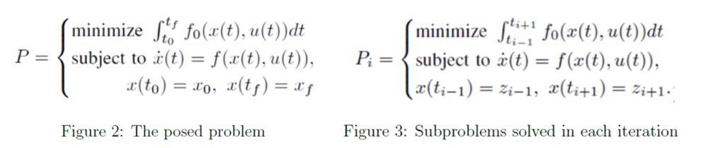
Pontryagin's Maximum Principle (PMP)
PMP gives a set of necessary conditions to be satisfied to solve the optimal control problem which gives rise to a set of differential equations and boundary conditions of the states and co-states of the system. Solving these will give the optimal solution for minimising the cost function for the given constraints and boundary conditions. In the formulation of PMP, there is an abnormal multiplier which is taken to be -1 without loss of generality.
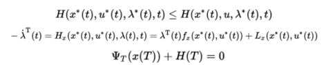
Single Shooting Method
Single shooting method is an alternate method to solve for the optimal trajectory by solving the two point boundary value problem instead of using the leapfrog algorithm. We have six variables and six equations which include three state vectors and three co-state vectors. This system needs six initial/boundary conditions for having a unique solution. What is available in this case is three initial conditions on the states and three final conditions on the states. This translates into solving a two point boundary value problem. To solve this, we employ the single shooting method by making an initial guess for the co-state vectors and compute the difference between the desired final states and the final states required from the guessing of initial co-state vectors. We add a perturbation to the initial co-state vector guess and find the Jacobian matrix for the variation of co-states. Using this Jacobian matrix, we update the co-states for every iteration with the difference in the co-states by the Newton-Raphson method. When the final state arrived from guessing and updating the co-states is very close to the desired final states, we terminate this loop and plot the optimal trajectory.
Methodology
The kinematic model of the differential drive mobile robot is as shown in the Fig 8. The objective is to minimise the control energy given the end time. So the objective function is taken as: The Hamiltonian equation for this system is: Applying PMP, we get the following equations: Now the equation we get is a two point boundary value problem. To solve this, we use two methods: 1. Leapfrog algorithm 2. Single Shooting algorithm. If Leapfrog algorithm is used, then an initial reference trajectory is taken and then iteratively an optimisation problem is solved and the trajectory is updated until the threshold is crossed. If the single shooting method is used, an initial guess is given and the guess is updated using Newton-Raphson method successively until the error is lower than a threshold value. After the two point boundary value problem is solved, the value of the initial co-states corresponding to the optimal trajectory is given as an initial value problem to the system model and then the state values are evaluated and then plotted.
Model Predictive Control
The control action derived using theory of optimal control is generally open loop in nature,i.e there is no feedback. Such control action are not preferred since they are not robust in nature. In order to make it more robust, a nonlinear MPC algorithm is coded. AN MPC algorithm was written and is attempted to implement but the parameters are yet to be tuned to achieve the final stabilising effect. Model predictive control is an control algorithm wherein the control actions are calculated based only on the present state value and nothing else. The basic algorithm is that it predicts the state over certain horizon and manipulates the control values such that the error obtained is minimised. Once we get a control value, this is used to propagate the system forward in time and this is repeated again and again.
Results
Trajectories
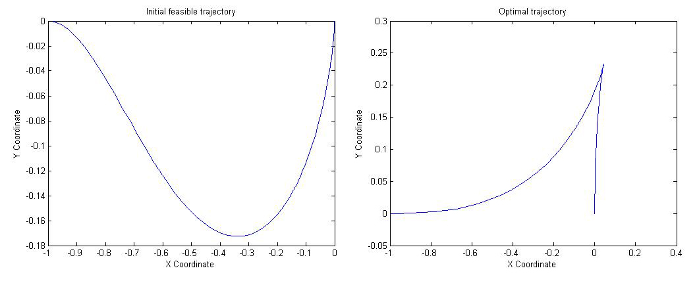
Evolution of States
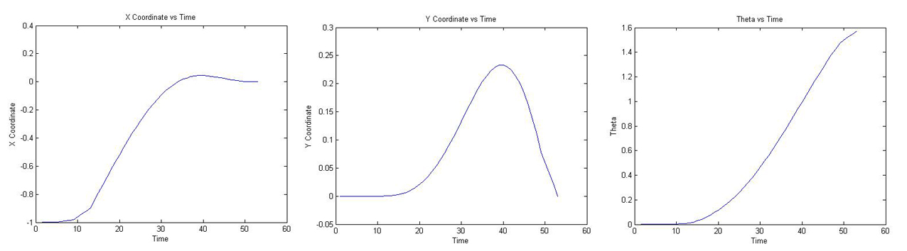
Future Work
Current algorithm works only for a fixed source and destination values. The inputs are found for the initial feasible trajectory for a given source and destination and generalising this algorithm to find the trajectory for any given initial and final states should be done.
Implementing multiple shooting method to solve the two point boundary value problem which will give a better approximation of the trajectory and also ensure convergence more than the single shooting method.
Implement adaptive step size control of the descent to decrease the time of convergence to the solution.
Derive a closed loop optimal control to allow for real time implementation of the algorithm in robots.
References
Aditya Vamsikrishna, Arun D. Mahindrakar, Shaligram Tiwari, "Numerical and Experimental Implementation of Leapfrog Algorithm for Optimal Control of a Mobile Robot", Indian Control Conference, 2017
A. Astolfi, "Asymptotic Stabilisation of non-holonomic systems with discontinuous control", PhD thesis, Swiss Federal Institute of Technology, Zurich, 1996
Peter Young, "The leapfrog method and other symplectic algorithms for integrating Newtons laws of motion", Physics 115/242, 2014
D. Liberzon, Calculus of Variations and Optimal Control Theory, Princeton University Press, 2012
R.Bulirsch, "Introduction to Numerical Analysis", 3rd Edition, January 2002
Model Predictive Control for Fluid Catalytic Cracking
Duration : 5 months | Guide : Prof. Raghunathan Rengaswamy | Team : Individual